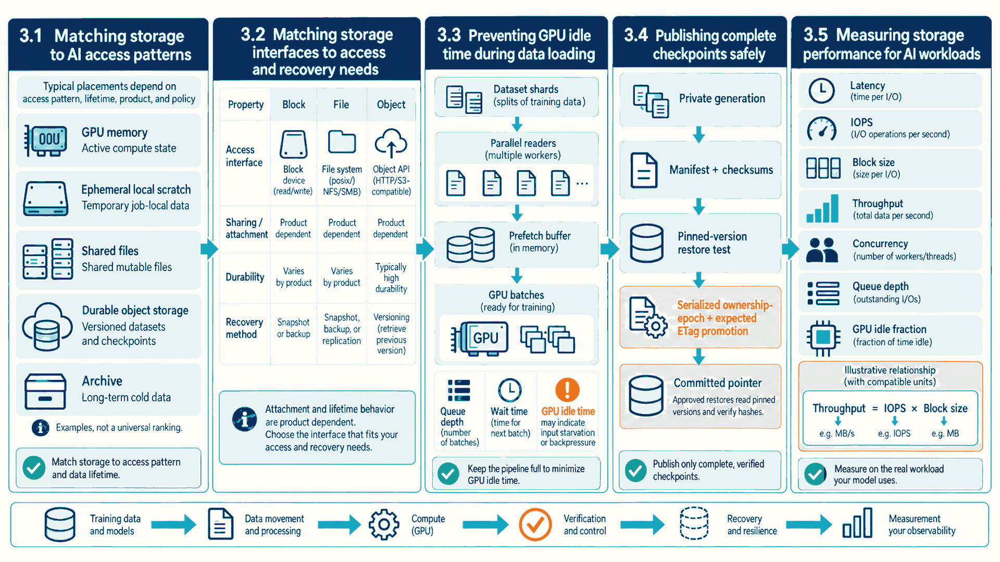
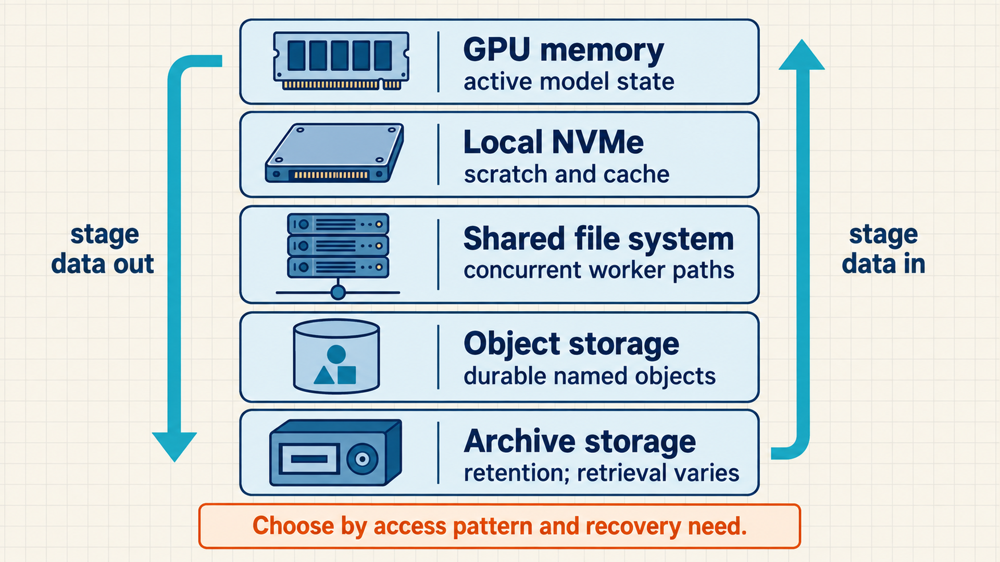
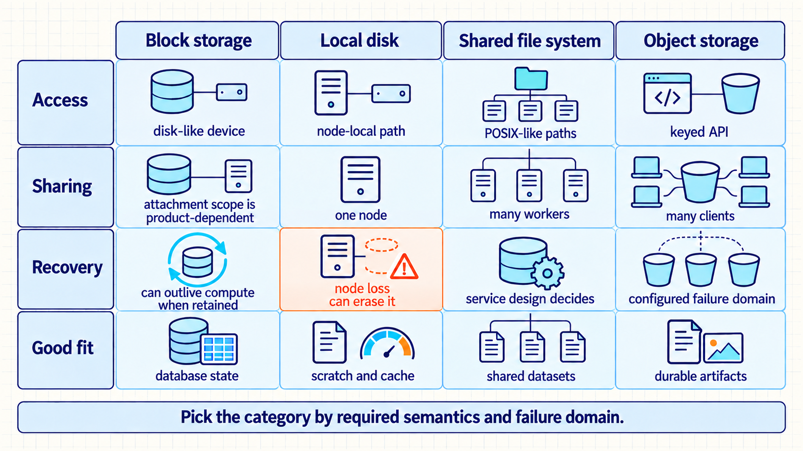
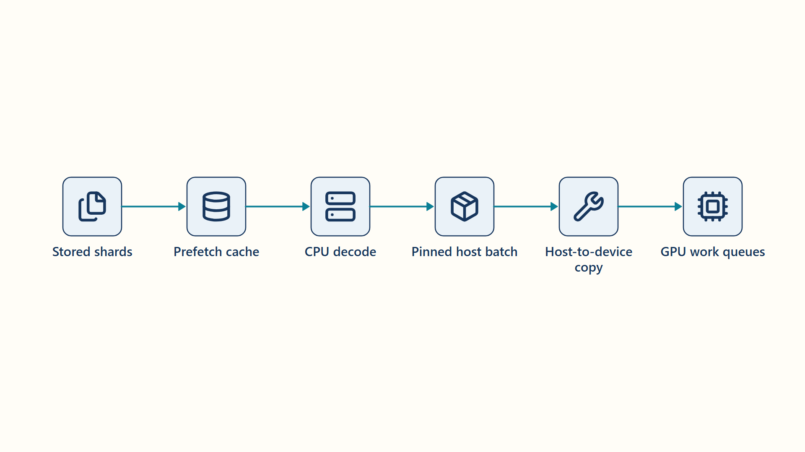
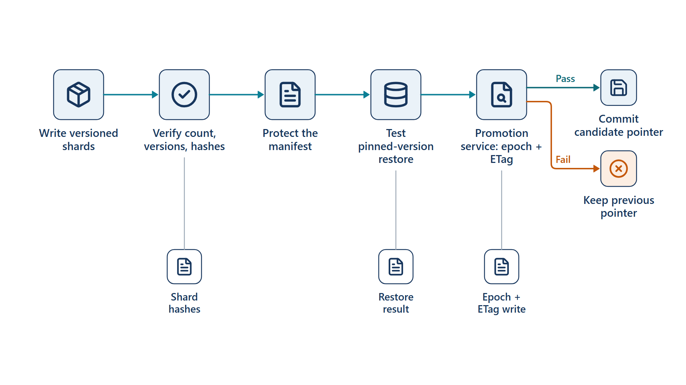
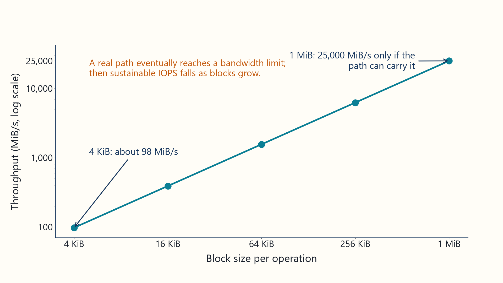

3 Storing training data, checkpoints, and artifacts
A 512-GPU training run can stall even when every GPU is healthy. If the input path delivers batches late, the GPUs wait. If a save is interrupted halfway, a later restore can load a checkpoint in which some ranks’ shards are missing. Chapter 2 decided what a checkpoint must contain and how often to take one. Whether the run actually keeps its GPUs busy and recovers correctly depends on where its data and checkpoints live and how they are written.
Training data, checkpoints, logs, serving weights, and retrieval collections need different storage behavior. A training run in particular needs a fast input path and a checkpoint save that a restore job sees only after it is complete.
Chapter map: storage for training data, checkpoints, and artifacts
The sections answer three linked questions:
- 3.1–3.2: What does each artifact need from storage, and which storage type provides it?
- 3.3: How does the input path keep every GPU supplied with batches?
- 3.4–3.5: How does a multi-rank save become a restore target only when it is complete, and how is storage performance measured for these workloads?

3.1 Matching storage to AI access patterns
Suppose the example run from Chapter 2 reads millions of training samples, writes a checkpoint every half hour, and emits logs and metrics throughout the run. Serving (Chapter 4) will later load model weights when a new replica starts, and retrieval (Chapter 5) will keep document collections and indexes. Calling all of this “data” hides whether an item needs byte-level updates, shared file paths, immutable object identities, or low-latency local reads. Object size, concurrency, durability, and access pattern determine the suitable storage category.
- Access pattern: The combination of object size, operation mix, concurrency, locality, sharing, durability, consistency, latency, throughput, and lifecycle requirements for a dataset or artifact.
IOPS counts completed input/output operations per second for a stated operation size.1 It matters when a workload makes many small reads, where counting transferred bytes alone can hide the operation cost.

The hierarchy is a movement plan, not a ranking. GPU memory and local NVMe are fast and scarce. Shared file systems support concurrent workers. Object storage addresses named objects through an API and provides durable namespaces that can span large collections, but it does not behave like a local file system. Restore-required archive tiers trade retrieval delay for a different cost model. Archive products with immediate retrieval also exist, so the chosen storage class and access pattern matter.2 Data can move between tiers while a durable copy remains the source of truth.
| Question | Why it changes the design | Example evidence |
|---|---|---|
| How large are objects? | Millions of tiny files stress metadata, multi-GB shards stress bandwidth. | Size histogram and file count |
| Who reads and writes? | One host can use local state, many workers need shared or replicated state. | Reader/writer topology |
| Sequential or random? | Large sequential reads favor throughput, small random reads need IOPS and indexing. | Block-size and seek distribution |
| Mutable or immutable? | In-place updates need different consistency and recovery than versioned objects. | Write/overwrite frequency |
| How durable? | Scratch data may vanish with a node, durable checkpoints cross failure domains. | RPO, RTO, retention |
| How fresh? | A retrieval index may lag source data only within an explicit freshness objective. | Allowed ingestion delay |
Consider three artifacts from this run against the table’s questions. Its half-hour checkpoint is a large, multi-writer save that must remain available after the specified node loss. A decoded-sample cache is reusable but regenerable from the versioned dataset, so local capacity and cache-hit rate can matter more than preserving that copy after a node fails. The retrieval collection used at request time needs fast indexed reads and a stated maximum lag behind its source documents. Its durable source and query-serving index need not share one storage tier. The size, readers, mutability, recovery requirement, and freshness target lead to different choices even within one application.
3.2 Matching storage interfaces to access and recovery needs
The access pattern identifies what the workload needs. Storage categories expose different namespaces, attachment models, concurrency, and durability rather than interchangeable capacity. Each category fits the role supported by its behavior.

Block storage presents a raw virtual disk to a host, which usually adds a file system. Shared file storage presents one hierarchical file namespace to multiple nodes. Attachment and update semantics determine where each storage category is safe to use.
| Category | Core semantics | Good fit | Caution |
|---|---|---|---|
| Local / ephemeral | Host-attached path, lowest network overhead, lifetime tied to node unless separately copied | Caches, shuffle, temporary preprocessing, checkpoint landing zone | Node loss can erase it |
| Block | Raw virtual disk attached to a host, file system added by the user | Databases, single-node state, predictable random I/O | Multi-attach and failover depend on product semantics |
| Shared file | Hierarchical POSIX-like namespace visible to many nodes | Training datasets, shared workspaces, distributed checkpoint reads | Metadata hot spots and small files can dominate |
| Object | Keyed immutable-or-replaced objects accessed by API | Datasets, model registry artifacts, durable checkpoints, logs, backups | Rename/list/append semantics differ from POSIX |
Apply one requirement to the checkpoint: another node must be able to restore it after a writer node fails. Local NVMe can absorb a fast save but cannot meet that requirement alone. A block volume may provide a filesystem for one writer, but node-loss recovery depends on the product’s reattachment and durability behavior. A shared file system lets ranks use common paths, yet its namespace alone does not prove the checkpoint remains available after a node or storage-service failure. Object storage can hold durable keyed shards across the chosen failure domain, but its single-key updates require the multi-shard publication protocol of Section 3.4. The measured write path may use a fast landing tier before verified durable publication. The team selects its authoritative copy according to the recovery requirement.
Storage semantics: object storage guarantees and limits
Object-store guarantees depend on the provider and API. Amazon S3 supports strong object reads and writes and atomic updates to one key, but not transactions across multiple keys. Objects can be overwritten unless additional controls prevent it:3
- A general-purpose S3 PUT creates or replaces one keyed object. Prefixes do not provide all filesystem directory operations. S3 Express One Zone directory buckets separately support documented rename and append operations.4 These are not general POSIX semantics.5
- Libraries that assume POSIX file locking, partial writes, or cheap directory scans need an adapter, a staging cache, or a different backing store.
The single-key guarantee matters in Section 3.4: a checkpoint spans many S3 objects, so a single-key update cannot make the whole save appear at once.
3.3 Preventing GPU idle time during data loading
Storage semantics now match the artifact type. A training job can still leave GPUs idle if decoding, metadata lookups, network reads, or sample assembly cannot fill device queues. The input path contains measurable buffers, workers, and shards. An empty downstream buffer can starve the GPU. In the other direction, backpressure occurs when a full downstream queue prevents an upstream stage from sending more work.

The path usually includes durable source objects, a conversion or sharding stage, a shared or local cache, CPU workers, pinned host memory, host-to-device transfer, and the accelerator. Pinned host memory is kept resident so a device transfer does not need an extra pageable-memory staging step. The slowest sustained stage limits throughput. Prefetching hides latency only while downstream consumption does not outrun the buffer.
- Sequential-read shards. Moderately large immutable shards reduce metadata operations and produce longer reads.
- Deterministic partitioning. Each data-parallel rank receives indices under the sampler padding or dropping policy of Section 2.3, with the seed and epoch recorded so that the order can be replayed.
- Parallel decoding. Worker processes overlap parsing and augmentation within CPU, memory, and open-file limits.
- Identity-based caching. Immutable dataset or shard identities connect cache hit rate, capacity, and eviction behavior to a specific input version.
- Queue measurements. Batch-fetch time, queue depth, GPU idle gaps, bytes/s, IOPS, cache hit rate, and failed reads show which stage delays a batch and whether the path is starving a consumer or slowing a producer.
Code example: Distributed loader sketch with default sampler padding and positive worker count. Worker randomness, resume state, and actual copy/compute overlap require separate controls.
loader = DataLoader(
dataset,
batch_size=batch_size,
sampler=DistributedSampler(dataset, shuffle=True, seed=seed),
num_workers=workers,
pin_memory=True,
persistent_workers=True,
prefetch_factor=2,
)
for epoch in range(start_epoch, epochs):
loader.sampler.set_epoch(epoch)
for batch in loader:
batch = move_to_device(batch, non_blocking=True)
loss = train_step(batch)Code walkthrough: deterministic distributed data loading
The sketch gives each rank a repeatable index order and prepares later batches while training runs. Worker randomness, restart state, and measured input speed determine whether complete batches are repeatable and ready in time:
- Rank partition:
DistributedSamplerapplies the padding or dropping policy of Section 2.3. Neither choice alone controls random transforms or restart position.6 - Epoch state:
set_epochchanges the reproducible shuffle order between epochs. - Host pipeline: Worker processes, persistence, and prefetching prepare future batches while the accelerator executes the current batch.
- Transfer path: Pinned host memory and
non_blocking=Truesupport nonblocking transfer. Actual copy/compute overlap also requires suitable hardware and stream use. This sketch does not create a separate copy stream.7 - Result: The recorded index policy makes repeated or omitted samples visible, while buffering can reduce accelerator idle time.
- Limits: This sketch assumes a positive worker count. More workers or prefetch slots can exhaust CPU, host memory, file descriptors, or storage bandwidth. Fetch time and queue depth reveal the limit, and larger values are not automatically better.
3.4 Publishing complete checkpoints safely
Section 2.7 fixed what a checkpoint contains and how often to save it. A distributed save is a set of shards written by many ranks plus metadata that describes them. If rank 17 fails while writing, the others finish, and a naive restore job that reads “the newest checkpoint directory” then loads a set with one shard missing. The storage protocol must keep such a partial save invisible to restore jobs.

The protocol needs protected generation objects, durable storage, and one coordinator. An ownership epoch is an increasing number that identifies the coordinator currently allowed to publish. Before work begins, a promotion service assigns that epoch and records the approved predecessor pointer’s ETag. An ETag: is the S3 comparison value returned for the current pointer object; the service supplies it in an If-Match conditional write. The pointer body carries the increasing ownership epoch so repeated byte content is not treated as the same logical revision. Only this service may mutate the restore pointer. It serializes ownership transfer with the epoch check and pointer update, so a replacement coordinator cannot receive a later epoch between an old coordinator’s check and write. The conditional write checks the expected pointer ETag, while the promotion service enforces ownership. These pointer comparisons differ from the S3 version IDs that the manifest records for exact shard and manifest reads. A stale coordinator cannot refresh the ownership credentials. A generation groups one complete save under a unique run-and-attempt ID, such as run8/attempt42:
- Generation: The exact set of shards and manifest written for one save attempt, whose approved object versions a restore may read.
Uniqueness alone cannot stop a retry from overwriting the same key. This S3 example assumes versioning is enabled on the durable destination bucket before the attempt starts. Each shard and the candidate manifest use a create-only If-None-Match: * write. A policy requires that condition for writes to the generation prefix, while writer permissions and retention policy prevent deletion of any referenced object version. S3 tests the condition against the current key, so versioning alone does not enforce create-only behavior after a delete marker. Concurrent deletes require separate protection.8
- Write a new generation. Each expected rank writes its shard under the unique attempt prefix with the create-only condition. Any local staging data first reaches the required durable failure domain through a supported conditional upload. An unguarded copy cannot bypass the destination’s write policy. The durable restore pointer still names the previous approved generation. A failed or uncertain retry checks the existing object’s content against the intended hash. A different value or owner fails this attempt and requires a new generation. A late writer cannot replace an existing shard.
- Verify and seal the generation. Once all required transfers and expected ranks report completion, the coordinator checks each durable shard’s size, cryptographic hash, training step, model configuration, and writer identity. It records the exact durable object keys and version IDs in a candidate manifest, then creates that manifest once under the same protected prefix. Extra late objects are outside that fixed list. A failed condition or mismatched candidate fails the attempt rather than editing the sealed manifest.
- Test the durable restore. A test reader uses the manifest’s pinned versions in the required failure domain, checks their hashes again, then reconstructs model, optimizer, scheduler, scaler, random state, and data position. A missing or changed version fails the restore test.9
- Publish the pointer. The coordinator sends the promotion service a request to advance the durable restore pointer to the tested manifest version. In one serialized operation, the service rejects an old ownership epoch, performs the
If-Matchpointer write against the recorded predecessor ETag, and completes that write before allowing ownership to change.10 After an uncertain acknowledgement, it reads the pointer back before retrying. Object-store single-key atomicity makes the pointer update atomic. The application supplies the ownership lease separately, and the shard set remains outside a single transaction.11 - Restore or ignore. A restore job reads the approved pointer, requests the specified manifest and shard versions, and verifies their hashes before using them. A missing or changed version fails closed. The coordinator may conditionally select a previous retained generation only after validating its pinned versions too. If the candidate never passed publication, the pointer remains on the previous generation. Cleanup removes abandoned attempts only after checking that no active attempt or referenced generation uses them.12
Consider two training ranks writing run8/attempt42. Rank 0 finishes, while rank 1 fails. The coordinator sees no complete candidate and leaves the pointer on the previous save. A delayed rank 1 can add only a new key, not replace rank 0’s shard or a sealed manifest. If rank 0 retries its key with different bytes, the create-only condition fails and the attempt is rejected. A fresh attempt gets a new prefix. When a complete candidate passes the pinned-version restore test, the coordinator may advance the pointer. Even after that update, a restore reads the listed versions and verifies their hashes, so a late overwrite of a current key cannot silently change the selected checkpoint.
| Phase | Storage role | Required evidence |
|---|---|---|
| Fast landing | Local NVMe or high-throughput shared scratch | Writer rank, shard name, size, checksum |
| Candidate generation | Durable namespace across required failure domains | Create-only shard and manifest writes, pinned versions, hashes, and compatible state |
| Replicate | Object storage in another failure domain | Copy status and verified object hashes |
| Retention | Durable object or archive tier | Policy, expiry, legal/security constraints |
| Restore and approve | Fresh allocation, then conditional durable pointer | Measured pinned-version restore, matching hashes, complete state, and current coordinator precondition |
Example: adding restore time to the Chapter 2 interval
This illustrative calculation extends the checkpoint example of Section 2.7 without claiming an optimal interval:
- Given: 30 minutes of useful work between saves, a 4-minute synchronous save, and a 6-minute node replacement and restore.
- Lost work: If a failure is equally likely at any moment of useful work, the expected loss is half the interval, 15 minutes. If failures are equally likely across the whole 34-minute cycle and a failure during the save loses the full 30 minutes, the expected loss is (30² ÷ 2 + 4 × 30) ÷ 34 \(\approx\) 16.8 minutes.
- Expected interruption: Adding the 6-minute restore gives about 21 to 23 minutes of delay before the run returns to its previous progress: 15 to 16.8 minutes of repeated training plus 6 minutes of recovery.
- Faster save: Writing shards to local NVMe first can cut the pause from 4 minutes to about 1 minute, reducing the save share of the cycle from 4 ÷ 34 \(\approx\) 11.8% to 1 ÷ 31 \(\approx\) 3.2%. Until the remote copy finishes, however, a node loss restores the previous generation, so the worst-case loss grows by the copy lag.
- Conclusion: Checkpoint policy trades recurring save overhead against expected lost work and restore time. A restore test supplies the evidence that the chosen policy works.
3.5 Measuring storage performance for AI workloads
The storage category and checkpoint protocol are now selected. A vendor’s performance figure can still mislead when its benchmark uses a different block size, operation mix, cache state, or client count than the training job. A representative benchmark relates operation rate to transferred bytes and includes the intended concurrency and tail behavior.

\[ B = \mathrm{IOPS} \cdot S_{\mathrm{block}} \tag{3.1}\]
\(B\) is throughput in bytes per second, \(\mathrm{IOPS}\) is the completed input/output operation rate, and \(S_{\mathrm{block}}\) is the average number of bytes transferred per operation over the same measurement window. Their product gives average throughput for that window. Neither factor necessarily stays constant as transfer size or concurrency changes.
Example: 4 KiB versus 1 MiB transfers at fixed IOPS
The same operation rate produces widely different bandwidth at different transfer sizes:
- Operation rate: The storage path completes 25,000 read operations per second.
- Small transfers: At 4 KiB per operation, throughput is 102,400,000 bytes/s, about 97.7 MiB/s.
- Large transfers: At 1 MiB per operation, the same operation rate would imply 25,000 MiB/s if the system and network could sustain it.
- Constraint: Once bandwidth is the limiting resource, the maximum sustainable IOPS falls as transfer size grows.
- Conclusion: IOPS can be interpreted only with transfer size, concurrency, latency, cache state, and operation mix.
Increasing block size may reduce achievable IOPS, and increasing clients may expose network, metadata, or server limits. A complete result includes read/write mix, direct-versus-cached mode, queue depth, client count, object or file size distribution, warm-up, duration, percentiles, and failure rate.13
Storage benchmark: purpose and limits
A storage benchmark is most useful for a training decision when it reproduces the job’s I/O:
- Works on: A specified client topology, operation mix, block-size distribution, and dataset size.
- Helps when: Selecting a tier or diagnosing an input, checkpoint, or weight-loading bottleneck.
- How it works: Replays intended sequential and random operations while recording throughput, IOPS, latency percentiles, CPU, network, cache state, and errors.
- Other limits: Synthetic tests miss application parsing, metadata behavior, burst credits, and noisy-neighbor effects unless modeled.
- Why it matters: A defined workload makes benchmark numbers comparable and interpretable.
Chapter 3 summary
Input speed, checkpoint durability, and benchmark assumptions have different failure points:
- Core mechanisms: Access patterns select among block, shared-file, object, and archive storage. A measured, buffered input pipeline with a recorded partition policy can reduce input-related GPU idle time. Create-only shard and manifest writes, pinned versions, hash checks, an ownership epoch, and a conditional pointer update make a verified checkpoint the restore target.
- Governing trade-offs: Faster local tiers reduce pause time but leave a window before the durable copy exists. Shorter checkpoint intervals reduce lost work but add save overhead. At a fixed IOPS rate, larger transfers imply more bandwidth; once bandwidth is the limit, achievable IOPS falls.
- Failure modes & defenses: Object stores update one key atomically, not a set of shards. Readers follow the approved pointer and verify its listed versions, while write and delete controls keep late writers from changing a published save. A benchmark that does not match the job’s block size, concurrency, and cache state gives misleading capacity figures.
Chapter checkpoint
Review Questions 11–15 in Appendix B, Section B.1, to test storage semantics, safe checkpoint publication, and the bandwidth and recovery-time calculations before moving to model serving.
Carry-forward result
The training run now has a measured input path and checkpoints that become restore targets only when complete. Part I ends with a recoverable model.
Chapter 4 serves that model to users. Its replicas load weights from this storage whenever a new replica starts, and Chapter 5 later builds retrieval collections as derived state on top of durable source documents.
Axboe, J., & fio contributors. (n.d.). fio: Flexible I/O tester (rev. 3.42, documentation build 3.42-115-gcd29). https://fio.readthedocs.io/en/latest/fio_doc.html. fio documents these workload and measurement controls. Its synthetic I/O statistics do not certify ML application throughput or effective queue depth for every engine.↩︎
Amazon Web Services. (n.d.). Understanding archive retrieval options (Amazon S3 User Guide). https://docs.aws.amazon.com/AmazonS3/latest/userguide/restoring-objects-retrieval-options.html. S3 distinguishes Glacier Instant Retrieval from restore-required Flexible Retrieval and Deep Archive. No current price comparison is asserted.↩︎
Amazon Web Services. (n.d.). What is Amazon S3? Amazon Simple Storage Service User Guide. https://docs.aws.amazon.com/AmazonS3/latest/userguide/Welcome.html#ConsistencyModel. S3 documents strong object operations, single-key atomicity, and the absence of cross-key atomic updates. Bucket-configuration exceptions and other providers require separate checks.↩︎
Amazon Web Services. (n.d.). RenameObject (Amazon S3 API 2006-03-01). https://docs.aws.amazon.com/AmazonS3/latest/API/API_RenameObject.html. RenameObject is limited to the documented Express One Zone/directory-bucket operation and supports preconditions. It is not general-purpose POSIX rename.↩︎
Amazon Web Services. (n.d.). Appending data to objects in directory buckets (Amazon S3 User Guide). https://docs.aws.amazon.com/AmazonS3/latest/userguide/directory-buckets-objects-append.html. S3 directory-bucket append uses an offset-based request. The capability is service-specific rather than a universal object-store property.↩︎
PyTorch Contributors. (n.d.). torch.utils.data. PyTorch 2.8 documentation. https://docs.pytorch.org/docs/2.8/data.html#torch.utils.data.distributed.DistributedSampler. DistributedSampler padding, dropping, set_epoch, and DataLoader behavior are documented for PyTorch 2.8. End-to-end repeatability needs further worker/RNG controls.↩︎
PyTorch Contributors. (n.d.). A guide on good usage of non_blocking and pin_memory() in PyTorch (PyTorch Tutorials, observed 2.14.0+cu130). https://docs.pytorch.org/tutorials/intermediate/pinmem_nonblock.html. The official tutorial distinguishes nonblocking host calls from device copy/compute overlap, which additionally needs pinned memory, suitable hardware, and separate stream use.↩︎
Amazon Web Services. (n.d.). How to prevent object overwrites with conditional writes and Enforce conditional writes on Amazon S3 buckets. Amazon S3 User Guide. Conditional writes. Bucket policy.
If-None-Match: *prevents replacement of a current key, and a bucket policy can require it for relevant uploads. The condition does not prevent deletion, and a delete marker or concurrent delete changes its behavior. This policy example does not supportCopyObjectinto its protected prefix. The application must use a supported conditional upload and restrict deletion.↩︎Amazon Web Services. (n.d.). Retrieving object versions from a versioning-enabled bucket. Amazon S3 User Guide. https://docs.aws.amazon.com/AmazonS3/latest/userguide/RetrievingObjectVersions.html. A GET with a version ID retrieves that exact object version rather than the current key. Content hashing, matching all shard versions to one manifest, restore tests, and retention are application checks, not cross-key S3 transactions.↩︎
Amazon Web Services. (n.d.). How to prevent object overwrites with conditional writes (Amazon S3 User Guide). https://docs.aws.amazon.com/AmazonS3/latest/userguide/conditional-writes.html. S3 conditional writes supply object-level create/update preconditions. Durable winner selection, restore tests, and recovery logic remain application responsibilities.↩︎
Amazon Web Services. (n.d.). What is Amazon S3? Amazon Simple Storage Service User Guide. https://docs.aws.amazon.com/AmazonS3/latest/userguide/Welcome.html#ConsistencyModel. The S3 consistency model documents atomic updates to one key, not cross-key transactions. The preceding recovery protocol adds application-level conditions.↩︎
Amazon Web Services. (n.d.). How to prevent object overwrites with conditional writes (Amazon S3 User Guide). https://docs.aws.amazon.com/AmazonS3/latest/userguide/conditional-writes.html. S3 conditional creation/update can protect an object-level pointer. The durable generation, writer-token, read-back, and restore protocol adds application-level controls that this API does not supply.↩︎
Axboe, J., & fio contributors. (n.d.). fio: Flexible I/O tester (rev. 3.42, documentation build 3.42-115-gcd29). https://fio.readthedocs.io/en/latest/fio_doc.html. fio documents these workload and measurement controls. Its synthetic I/O statistics do not certify ML application throughput or effective queue depth for every engine.↩︎